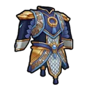
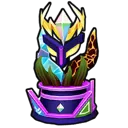

Cleric
Spellcaster
Holy missionaries who protect the faithful with divine powers.
Stats
Attack (100)
0
Defense (100)
0
Health (100)
0
Hypermax: the strongest build
#41 of 42 classes in the Hypermax ranking
Leaderboard power
338,591
Profile power
270,873
Attack
192,930
Defense
20,112
Health
15,299
Critical
12%
Crit damage
×2
Element
190
Stallion Scythe T16
Rune: Apotheosis Element · Spirit: Titan Spirit

Malady's Robe T15
Rune: Apotheosis Element · Spirit: Titan Spirit
Phoenix Cowl T15
Rune: Blistering Element · Spirit: Titan Spirit
Titan Admiral Boots T15
Rune: Apotheosis Element · Spirit: Titan Spirit
Ghost Trap T15
Rune: Apotheosis Element · Spirit: Titan Spirit

Avatar of Magic T15
Rune: Apotheosis Element · Spirit: Titan Spirit
Skills: Righteous Providence T4, Elder God of War T4, Penta Cast T4
Computed only from game data: Legendary quality, Starforged, Ascension and Transcendence, level 50.